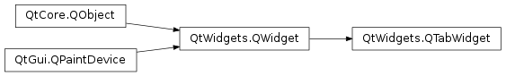
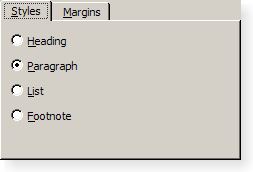

QTabWidget¶
Synopsis¶
Functions¶
- def
addTab(widget, arg__2) - def
addTab(widget, icon, label) - def
clear() - def
cornerWidget([corner=Qt.TopRightCorner]) - def
count() - def
currentIndex() - def
currentWidget() - def
documentMode() - def
elideMode() - def
iconSize() - def
indexOf(widget) - def
initStyleOption(option) - def
insertTab(index, widget, arg__3) - def
insertTab(index, widget, icon, label) - def
isMovable() - def
isTabEnabled(index) - def
removeTab(index) - def
setCornerWidget(w[, corner=Qt.TopRightCorner]) - def
setDocumentMode(set) - def
setElideMode(arg__1) - def
setIconSize(size) - def
setMovable(movable) - def
setTabBar(arg__1) - def
setTabBarAutoHide(enabled) - def
setTabEnabled(index, arg__2) - def
setTabIcon(index, icon) - def
setTabPosition(arg__1) - def
setTabShape(s) - def
setTabText(index, arg__2) - def
setTabToolTip(index, tip) - def
setTabWhatsThis(index, text) - def
setTabsClosable(closeable) - def
setUsesScrollButtons(useButtons) - def
tabBar() - def
tabBarAutoHide() - def
tabIcon(index) - def
tabPosition() - def
tabShape() - def
tabText(index) - def
tabToolTip(index) - def
tabWhatsThis(index) - def
tabsClosable() - def
usesScrollButtons() - def
widget(index)
Virtual functions¶
- def
tabInserted(index) - def
tabRemoved(index)
Slots¶
- def
setCurrentIndex(index) - def
setCurrentWidget(widget)
Signals¶
- def
currentChanged(index) - def
tabBarClicked(index) - def
tabBarDoubleClicked(index) - def
tabCloseRequested(index)
Detailed Description¶
The
PySide2.QtWidgets.QTabWidgetclass provides a stack of tabbed widgets.A tab widget provides a tab bar (see
PySide2.QtWidgets.QTabBar) and a “page area” that is used to display pages related to each tab. By default, the tab bar is shown above the page area, but different configurations are available (seeQTabWidget.TabPosition). Each tab is associated with a different widget (called a page). Only the current page is shown in the page area; all the other pages are hidden. The user can show a different page by clicking on its tab or by pressing its Alt+*letter* shortcut if it has one.The normal way to use
PySide2.QtWidgets.QTabWidgetis to do the following:
- Create a
PySide2.QtWidgets.QTabWidget.- Create a
PySide2.QtWidgets.QWidgetfor each of the pages in the tab dialog, but do not specify parent widgets for them.- Insert child widgets into the page widget, using layouts to position them as normal.
- Call
PySide2.QtWidgets.QTabWidget.addTab()orPySide2.QtWidgets.QTabWidget.insertTab()to put the page widgets into the tab widget, giving each tab a suitable label with an optional keyboard shortcut.The position of the tabs is defined by
PySide2.QtWidgets.QTabWidget.tabPosition(), their shape byPySide2.QtWidgets.QTabWidget.tabShape().The signal
PySide2.QtWidgets.QTabWidget.currentChanged()is emitted when the user selects a page.The current page index is available as
PySide2.QtWidgets.QTabWidget.currentIndex(), the current page widget withPySide2.QtWidgets.QTabWidget.currentWidget(). You can retrieve a pointer to a page widget with a given index usingPySide2.QtWidgets.QTabWidget.widget(), and can find the index position of a widget withPySide2.QtWidgets.QTabWidget.indexOf(). UsePySide2.QtWidgets.QTabWidget.setCurrentWidget()orPySide2.QtWidgets.QTabWidget.setCurrentIndex()to show a particular page.You can change a tab’s text and icon using
PySide2.QtWidgets.QTabWidget.setTabText()orPySide2.QtWidgets.QTabWidget.setTabIcon(). A tab and its associated page can be removed withPySide2.QtWidgets.QTabWidget.removeTab().Each tab is either enabled or disabled at any given time (see
PySide2.QtWidgets.QTabWidget.setTabEnabled()). If a tab is enabled, the tab text is drawn normally and the user can select that tab. If it is disabled, the tab is drawn in a different way and the user cannot select that tab. Note that even if a tab is disabled, the page can still be visible, for example if all of the tabs happen to be disabled.Tab widgets can be a very good way to split up a complex dialog. An alternative is to use a
PySide2.QtWidgets.QStackedWidgetfor which you provide some means of navigating between pages, for example, aPySide2.QtWidgets.QToolBaror aPySide2.QtWidgets.QListWidget.Most of the functionality in
PySide2.QtWidgets.QTabWidgetis provided by aPySide2.QtWidgets.QTabBar(at the top, providing the tabs) and aPySide2.QtWidgets.QStackedWidget(most of the area, organizing the individual pages).
-
class
PySide2.QtWidgets.QTabWidget([parent=nullptr])¶ Parameters: parent – PySide2.QtWidgets.QWidgetConstructs a tabbed widget with parent
parent.
-
PySide2.QtWidgets.QTabWidget.TabPosition¶ This enum type defines where
PySide2.QtWidgets.QTabWidgetdraws the tab row:Constant Description QTabWidget.North The tabs are drawn above the pages. QTabWidget.South The tabs are drawn below the pages. QTabWidget.West The tabs are drawn to the left of the pages. QTabWidget.East The tabs are drawn to the right of the pages.
-
PySide2.QtWidgets.QTabWidget.TabShape¶ This enum type defines the shape of the tabs:
Constant Description QTabWidget.Rounded The tabs are drawn with a rounded look. This is the default shape. QTabWidget.Triangular The tabs are drawn with a triangular look.
-
PySide2.QtWidgets.QTabWidget.addTab(widget, arg__2)¶ Parameters: - widget –
PySide2.QtWidgets.QWidget - arg__2 – unicode
Return type: PySide2.QtCore.intAdds a tab with the given
pageandlabelto the tab widget, and returns the index of the tab in the tab bar. Ownership ofpageis passed on to thePySide2.QtWidgets.QTabWidget.If the tab’s
labelcontains an ampersand, the letter following the ampersand is used as a shortcut for the tab, e.g. if the label is “Bro&wse” then Alt+W becomes a shortcut which will move the focus to this tab.Note
If you call after
PySide2.QtWidgets.QWidget.show(), the layout system will try to adjust to the changes in its widgets hierarchy and may cause flicker. To prevent this, you can set theQWidget.updatesEnabledproperty to false prior to changes; remember to set the property to true when the changes are done, making the widget receive paint events again.- widget –
-
PySide2.QtWidgets.QTabWidget.addTab(widget, icon, label) Parameters: - widget –
PySide2.QtWidgets.QWidget - icon –
PySide2.QtGui.QIcon - label – unicode
Return type: PySide2.QtCore.intThis is an overloaded function.
Adds a tab with the given
page,icon, andlabelto the tab widget, and returns the index of the tab in the tab bar. Ownership ofpageis passed on to thePySide2.QtWidgets.QTabWidget.This function is the same as
PySide2.QtWidgets.QTabWidget.addTab(), but with an additionalicon.- widget –
-
PySide2.QtWidgets.QTabWidget.clear()¶ Removes all the pages, but does not delete them. Calling this function is equivalent to calling
PySide2.QtWidgets.QTabWidget.removeTab()until the tab widget is empty.
-
PySide2.QtWidgets.QTabWidget.cornerWidget([corner=Qt.TopRightCorner])¶ Parameters: corner – PySide2.QtCore.Qt.CornerReturn type: PySide2.QtWidgets.QWidgetReturns the widget shown in the
cornerof the tab widget or 0.
-
PySide2.QtWidgets.QTabWidget.count()¶ Return type: PySide2.QtCore.int
-
PySide2.QtWidgets.QTabWidget.currentChanged(index)¶ Parameters: index – PySide2.QtCore.int
-
PySide2.QtWidgets.QTabWidget.currentIndex()¶ Return type: PySide2.QtCore.int
-
PySide2.QtWidgets.QTabWidget.currentWidget()¶ Return type: PySide2.QtWidgets.QWidgetReturns a pointer to the page currently being displayed by the tab dialog. The tab dialog does its best to make sure that this value is never 0 (but if you try hard enough, it can be).
-
PySide2.QtWidgets.QTabWidget.documentMode()¶ Return type: PySide2.QtCore.bool
-
PySide2.QtWidgets.QTabWidget.elideMode()¶ Return type: PySide2.QtCore.Qt.TextElideMode
-
PySide2.QtWidgets.QTabWidget.iconSize()¶ Return type: PySide2.QtCore.QSize
-
PySide2.QtWidgets.QTabWidget.indexOf(widget)¶ Parameters: widget – PySide2.QtWidgets.QWidgetReturn type: PySide2.QtCore.intReturns the index position of the page occupied by the widget
w, or -1 if the widget cannot be found.
-
PySide2.QtWidgets.QTabWidget.initStyleOption(option)¶ Parameters: option – PySide2.QtWidgets.QStyleOptionTabWidgetFrameInitialize
optionwith the values from thisPySide2.QtWidgets.QTabWidget. This method is useful for subclasses when they need aPySide2.QtWidgets.QStyleOptionTabWidgetFrame, but don’t want to fill in all the information themselves.
-
PySide2.QtWidgets.QTabWidget.insertTab(index, widget, arg__3)¶ Parameters: - index –
PySide2.QtCore.int - widget –
PySide2.QtWidgets.QWidget - arg__3 – unicode
Return type: PySide2.QtCore.intInserts a tab with the given
labelandpageinto the tab widget at the specifiedindex, and returns the index of the inserted tab in the tab bar. Ownership ofpageis passed on to thePySide2.QtWidgets.QTabWidget.The label is displayed in the tab and may vary in appearance depending on the configuration of the tab widget.
If the tab’s
labelcontains an ampersand, the letter following the ampersand is used as a shortcut for the tab, e.g. if the label is “Bro&wse” then Alt+W becomes a shortcut which will move the focus to this tab.If
indexis out of range, the tab is simply appended. Otherwise it is inserted at the specified position.If the
PySide2.QtWidgets.QTabWidgetwas empty before this function is called, the new page becomes the current page. Inserting a new tab at an index less than or equal to the current index will increment the current index, but keep the current page.Note
If you call after
PySide2.QtWidgets.QWidget.show(), the layout system will try to adjust to the changes in its widgets hierarchy and may cause flicker. To prevent this, you can set theQWidget.updatesEnabledproperty to false prior to changes; remember to set the property to true when the changes are done, making the widget receive paint events again.- index –
-
PySide2.QtWidgets.QTabWidget.insertTab(index, widget, icon, label) Parameters: - index –
PySide2.QtCore.int - widget –
PySide2.QtWidgets.QWidget - icon –
PySide2.QtGui.QIcon - label – unicode
Return type: PySide2.QtCore.intThis is an overloaded function.
Inserts a tab with the given
label,page, andiconinto the tab widget at the specifiedindex, and returns the index of the inserted tab in the tab bar. Ownership ofpageis passed on to thePySide2.QtWidgets.QTabWidget.This function is the same as
PySide2.QtWidgets.QTabWidget.insertTab(), but with an additionalicon.- index –
-
PySide2.QtWidgets.QTabWidget.isMovable()¶ Return type: PySide2.QtCore.bool
-
PySide2.QtWidgets.QTabWidget.isTabEnabled(index)¶ Parameters: index – PySide2.QtCore.intReturn type: PySide2.QtCore.boolReturns
trueif the page at positionindexis enabled; otherwise returnsfalse.
-
PySide2.QtWidgets.QTabWidget.removeTab(index)¶ Parameters: index – PySide2.QtCore.intRemoves the tab at position
indexfrom this stack of widgets. The page widget itself is not deleted.
-
PySide2.QtWidgets.QTabWidget.setCornerWidget(w[, corner=Qt.TopRightCorner])¶ Parameters: - w –
PySide2.QtWidgets.QWidget - corner –
PySide2.QtCore.Qt.Corner
Sets the given
widgetto be shown in the specifiedcornerof the tab widget. The geometry of the widget is determined based on the widget’sPySide2.QtWidgets.QTabWidget.sizeHint()and thePySide2.QtWidgets.QWidget.style().Only the horizontal element of the
cornerwill be used.Passing 0 shows no widget in the corner.
Any previously set corner widget is hidden.
All widgets set here will be deleted by the tab widget when it is destroyed unless you separately reparent the widget after setting some other corner widget (or 0).
Note: Corner widgets are designed for
NorthandSouthtab positions; other orientations are known to not work properly.- w –
-
PySide2.QtWidgets.QTabWidget.setCurrentIndex(index)¶ Parameters: index – PySide2.QtCore.int
-
PySide2.QtWidgets.QTabWidget.setCurrentWidget(widget)¶ Parameters: widget – PySide2.QtWidgets.QWidgetMakes
widgetthe current widget. Thewidgetused must be a page in this tab widget.
-
PySide2.QtWidgets.QTabWidget.setDocumentMode(set)¶ Parameters: set – PySide2.QtCore.bool
-
PySide2.QtWidgets.QTabWidget.setElideMode(arg__1)¶ Parameters: arg__1 – PySide2.QtCore.Qt.TextElideMode
-
PySide2.QtWidgets.QTabWidget.setIconSize(size)¶ Parameters: size – PySide2.QtCore.QSize
-
PySide2.QtWidgets.QTabWidget.setMovable(movable)¶ Parameters: movable – PySide2.QtCore.bool
-
PySide2.QtWidgets.QTabWidget.setTabBar(arg__1)¶ Parameters: arg__1 – PySide2.QtWidgets.QTabBarReplaces the dialog’s
PySide2.QtWidgets.QTabBarheading with the tab bartb. Note that this must be called before any tabs have been added, or the behavior is undefined.
-
PySide2.QtWidgets.QTabWidget.setTabBarAutoHide(enabled)¶ Parameters: enabled – PySide2.QtCore.bool
-
PySide2.QtWidgets.QTabWidget.setTabEnabled(index, arg__2)¶ Parameters: - index –
PySide2.QtCore.int - arg__2 –
PySide2.QtCore.bool
If
enableis true, the page at positionindexis enabled; otherwise the page at positionindexis disabled. The page’s tab is redrawn appropriately.PySide2.QtWidgets.QTabWidgetusesQWidget.setEnabled()internally, rather than keeping a separate flag.Note that even a disabled tab/page may be visible. If the page is visible already,
PySide2.QtWidgets.QTabWidgetwill not hide it; if all the pages are disabled,PySide2.QtWidgets.QTabWidgetwill show one of them.- index –
-
PySide2.QtWidgets.QTabWidget.setTabIcon(index, icon)¶ Parameters: - index –
PySide2.QtCore.int - icon –
PySide2.QtGui.QIcon
This is an overloaded function.
Sets the
iconfor the tab at positionindex.- index –
-
PySide2.QtWidgets.QTabWidget.setTabPosition(arg__1)¶ Parameters: arg__1 – PySide2.QtWidgets.QTabWidget.TabPosition
-
PySide2.QtWidgets.QTabWidget.setTabShape(s)¶ Parameters: s – PySide2.QtWidgets.QTabWidget.TabShape
-
PySide2.QtWidgets.QTabWidget.setTabText(index, arg__2)¶ Parameters: - index –
PySide2.QtCore.int - arg__2 – unicode
Defines a new
labelfor the page at positionindex‘s tab.If the provided text contains an ampersand character (‘&’), a shortcut is automatically created for it. The character that follows the ‘&’ will be used as the shortcut key. Any previous shortcut will be overwritten, or cleared if no shortcut is defined by the text. See the
QShortcutdocumentation for details (to display an actual ampersand, use ‘&&’).- index –
-
PySide2.QtWidgets.QTabWidget.setTabToolTip(index, tip)¶ Parameters: - index –
PySide2.QtCore.int - tip – unicode
Sets the tab tool tip for the page at position
indextotip.- index –
-
PySide2.QtWidgets.QTabWidget.setTabWhatsThis(index, text)¶ Parameters: - index –
PySide2.QtCore.int - text – unicode
Sets the What’s This help text for the page at position
indextotext.- index –
-
PySide2.QtWidgets.QTabWidget.setTabsClosable(closeable)¶ Parameters: closeable – PySide2.QtCore.bool
-
PySide2.QtWidgets.QTabWidget.setUsesScrollButtons(useButtons)¶ Parameters: useButtons – PySide2.QtCore.bool
-
PySide2.QtWidgets.QTabWidget.tabBar()¶ Return type: PySide2.QtWidgets.QTabBarReturns the current
PySide2.QtWidgets.QTabBar.
-
PySide2.QtWidgets.QTabWidget.tabBarAutoHide()¶ Return type: PySide2.QtCore.bool
-
PySide2.QtWidgets.QTabWidget.tabBarClicked(index)¶ Parameters: index – PySide2.QtCore.int
-
PySide2.QtWidgets.QTabWidget.tabBarDoubleClicked(index)¶ Parameters: index – PySide2.QtCore.int
-
PySide2.QtWidgets.QTabWidget.tabCloseRequested(index)¶ Parameters: index – PySide2.QtCore.int
-
PySide2.QtWidgets.QTabWidget.tabIcon(index)¶ Parameters: index – PySide2.QtCore.intReturn type: PySide2.QtGui.QIconReturns the icon for the tab on the page at position
index.
-
PySide2.QtWidgets.QTabWidget.tabInserted(index)¶ Parameters: index – PySide2.QtCore.intThis virtual handler is called after a new tab was added or inserted at position
index.
-
PySide2.QtWidgets.QTabWidget.tabPosition()¶ Return type: PySide2.QtWidgets.QTabWidget.TabPosition
-
PySide2.QtWidgets.QTabWidget.tabRemoved(index)¶ Parameters: index – PySide2.QtCore.intThis virtual handler is called after a tab was removed from position
index.
-
PySide2.QtWidgets.QTabWidget.tabShape()¶ Return type: PySide2.QtWidgets.QTabWidget.TabShape
-
PySide2.QtWidgets.QTabWidget.tabText(index)¶ Parameters: index – PySide2.QtCore.intReturn type: unicode Returns the label text for the tab on the page at position
index.
-
PySide2.QtWidgets.QTabWidget.tabToolTip(index)¶ Parameters: index – PySide2.QtCore.intReturn type: unicode Returns the tab tool tip for the page at position
indexor an empty string if no tool tip has been set.
-
PySide2.QtWidgets.QTabWidget.tabWhatsThis(index)¶ Parameters: index – PySide2.QtCore.intReturn type: unicode Returns the What’s This help text for the page at position
index, or an empty string if no help text has been set.
-
PySide2.QtWidgets.QTabWidget.tabsClosable()¶ Return type: PySide2.QtCore.bool
-
PySide2.QtWidgets.QTabWidget.usesScrollButtons()¶ Return type: PySide2.QtCore.bool
-
PySide2.QtWidgets.QTabWidget.widget(index)¶ Parameters: index – PySide2.QtCore.intReturn type: PySide2.QtWidgets.QWidgetReturns the tab page at index position
indexor 0 if theindexis out of range.
© 2018 The Qt Company Ltd. Documentation contributions included herein are the copyrights of their respective owners. The documentation provided herein is licensed under the terms of the GNU Free Documentation License version 1.3 as published by the Free Software Foundation. Qt and respective logos are trademarks of The Qt Company Ltd. in Finland and/or other countries worldwide. All other trademarks are property of their respective owners.